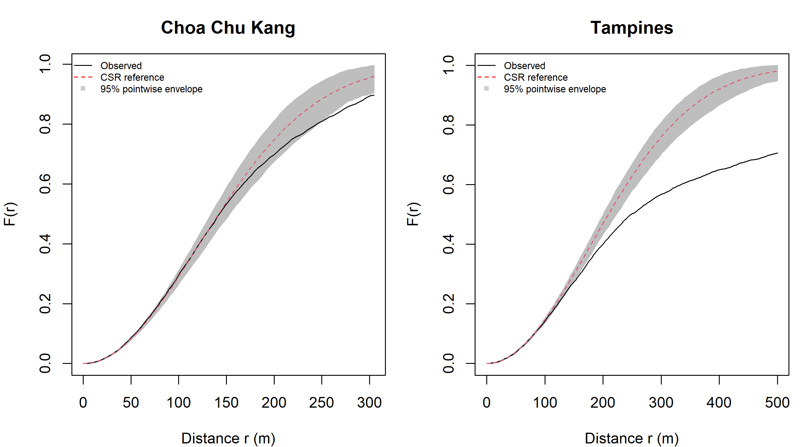
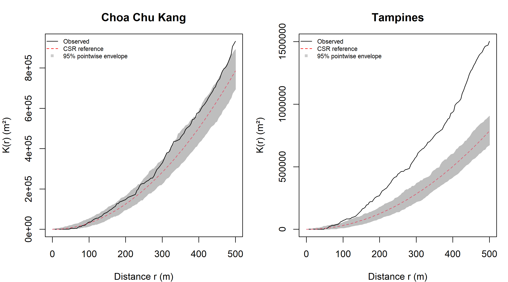
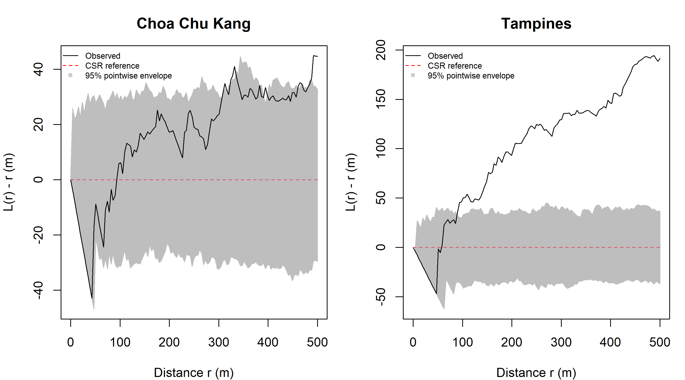

Second-order point patterns: G, F, K and L functions
Author
Zhenhua Liu
Published
September 19, 2026
Overview
Exercise 2A mapped the intensity of childcare service records. Here I ask a different question: how does the spacing of childcare locations in Choa Chu Kang and Tampines compare with a uniform random pattern inside the same planning boundaries?
Following course Chapter 5, I examine G, F, K and L functions in that order, then compare observed curves with Monte Carlo simulations. G and F describe nearest-neighbour and empty-space distributions; K and L summarise cumulative interpoint relationships. These descriptions can reveal departures from a reference model, but do not identify the causal process that produced the locations.
1. Setup and reproducible preparation
library(sf)
Linking to GEOS 3.14.1, GDAL 3.12.1, PROJ 9.7.1; sf_use_s2() is TRUE
library(dplyr)
Attaching package: 'dplyr'
The following objects are masked from 'package:stats':
filter, lag
The following objects are masked from 'package:base':
intersect, setdiff, setequal, union
library(spatstat.geom)
Loading required package: spatstat.data
Loading required package: spatstat.univar
spatstat.univar 3.2-0
spatstat.geom 3.8-3
library(spatstat.explore)
Loading required package: spatstat.random
spatstat.random 3.5-1
Loading required package: nlme
Attaching package: 'nlme'
The following object is masked from 'package:dplyr':
collapse
spatstat.explore 3.8-2
library(spatstat.random)library(terra)
terra 1.9.50
Attaching package: 'terra'
The following objects are masked from 'package:spatstat.geom':
area, delaunay, is.empty, rescale, rotate, shift, where.max,
where.min
library(tmap)
Registered S3 method overwritten by 'stars':
method from
st_interpolate_aw.stars sf
I reuse the ECDA childcare snapshot and MP2019 subzone boundary from 2A. The childcare layer describes December 2021, even though the portal was updated in 2026. Reusing the input files makes the comparison temporally consistent. It does not make the inventory current.
dataset records geometry epsg empty invalid
1 Child Care Services 1925 POINT 4326 0 0
2 MP2019 subzones 332 MULTIPOLYGON 4326 0 6
stopifnot(!any(st_is_empty(childcare_raw)), !any(st_is_empty(subzones_raw)),all(st_geometry_type(childcare_raw) =="POINT"))childcare <-st_transform(childcare_raw, 3414)subzones <-st_transform(st_make_valid(subzones_raw), 3414)subzones <-filter(subzones, SUBZONE_N !="SOUTHERN GROUP",!PLN_AREA_N %in%c("WESTERN ISLANDS", "NORTH-EASTERN ISLANDS"))stopifnot(st_crs(childcare) ==st_crs(subzones), !st_is_longlat(childcare))singapore <-st_union(subzones)sg_window <-as.owin(singapore)xy <-st_coordinates(childcare)inside <-inside.owin(xy[, 1], xy[, 2], sg_window)duplicate_location <-duplicated(as.data.frame(xy))# Co-located records may be different operators. Keep them for service intensity.childcare_ppp <-ppp(xy[inside, 1], xy[inside, 2], window = sg_window,checkdup =FALSE)unitname(childcare_ppp) <-c("metre", "metres")childcare_unique <-unique(childcare_ppp)quality_audit <-data.frame(measure =c("Imported records", "Retained subzones", "Outside study window","Records at repeated coordinates (beyond first)", "Records in window","Distinct locations in window", "Study area (km2)"),value =c(nrow(childcare), nrow(subzones), sum(!inside), sum(duplicate_location),npoints(childcare_ppp), npoints(childcare_unique), area.owin(sg_window) /1e6))quality_audit
measure value
1 Imported records 1925.0000
2 Retained subzones 327.0000
3 Outside study window 0.0000
4 Records at repeated coordinates (beyond first) 187.0000
5 Records in window 1925.0000
6 Distinct locations in window 1738.0000
7 Study area (km2) 669.5167
The shared preparation transforms both layers to EPSG:3414, checks geometry and exclusions, and constructs polygonal observation windows. This page executes that preparation itself; it does not depend on objects left in an earlier R session.
planning_area records locations km2 records_per_km2
PUNGGOL PUNGGOL 72 65 9.374274 7.680595
TAMPINES TAMPINES 117 105 20.795431 5.626236
CHOA CHU KANG CHOA CHU KANG 74 67 6.117294 12.096852
JURONG WEST JURONG WEST 110 99 14.680536 7.492914
NoteWhich events are being analysed?
Several childcare records share exactly the same coordinate. The principal analysis here collapses these to distinct sites because a simple point-process model assumes separate event locations. This is an explicit change of unit, not a claim that the original records are erroneous. A final sensitivity analysis restores every record. The record-based KDE in 2A remains unchanged.
2. Study windows and the random reference model
Under the null model, the observed number of sites is fixed and each location is independently uniform within its planning-area polygon. This is conditional complete spatial randomness (CSR). The alternative is departure from that model in the selected distance range. Keeping the same boundary and count avoids confounding location pattern with different totals or observation areas.
I preselect 0–500 m and 129 equally spaced distances for both areas, before examining the curves. This focuses the comparison on neighbourhood-scale spacing and avoids searching many distance ranges for a favourable result. Distances are straight-line metres, not walking routes. A 500 m separation therefore has no automatic interpretation as a service catchment.
# Simple point-process diagnostics use distinct sites; records remain in 2A's KDE.patterns <-lapply(area_patterns[c("CHOA CHU KANG", "TAMPINES")], unique)nsim <-199Ldistance_grid <-seq(0, 500, length.out =129)functions <-list(G = Gest, F = Fest, K = Kest, L = Lest)corrections <-c(G ="km", F ="km", K ="Ripley", L ="Ripley")set.seed(20260921)# Conditional CSR: each simulation preserves the area's number of distinct sites.simulations <-lapply(patterns, function(x)lapply(seq_len(nsim), function(i) runifpoint(npoints(x), win =Window(x))))estimates <-lapply(patterns, function(x) lapply(names(functions), function(fn) functions[[fn]](x, r = distance_grid, correction = corrections[[fn]])))for (nm innames(estimates)) names(estimates[[nm]]) <-names(functions)
tmap_mode("plot")
ℹ tmap modes "plot" - "view"
ℹ toggle with `tmap::ttm()`
Distinct childcare sites and the actual observation windows. Each panel has its own map scale.
The analysis uses 67 sites in Choa Chu Kang and 105 sites in Tampines. Both polygons include land that is not equally plausible for childcare facilities. Rejection of this homogeneous model could reflect land use or population gradients, as well as genuine interaction between providers.
3. Simulation envelopes and edge correction
Points near an observation boundary may have unobserved neighbours outside it. For G and F, I use Kaplan–Meier correction to handle censored distances. For K and L, I use Ripley’s isotropic edge correction. I apply the same estimator to the observed pattern and every simulation. For G I also display the course’s border estimator as a sensitivity comparison.
The 199 simulated patterns in each area are reused across all four functions. This makes differences between diagnostics easier to interpret because they are not caused by unrelated simulation draws.
ImportantAn envelope is not automatically a global test
These plots show 95% pointwise envelopes: with 199 simulations and nrank = 5, the two-sided level at one preselected distance is 2 × 5 / 200 = 0.05. Scanning the whole curve for any crossing changes that error rate. I therefore report a separate maximum-deviation Monte Carlo test over the full 0–500 m interval and apply Holm adjustment across the eight area/function comparisons.
The course’s 99-simulation, rank-one pointwise envelope has level 0.02 at a single distance, not 0.001. Our 199-simulation Monte Carlo p-value has resolution 0.005 and cannot support a claim of p < 0.001. I use a stated 5% threshold rather than repeating that mismatch.
Code
plot_comparison <-function(fn) { old <-par(mfrow =c(1, 2), mar =c(4, 4, 3, 1))on.exit(par(old))for (nm innames(envelopes)) { e <- envelopes[[nm]][[fn]]if (fn =="L") {plot(e, . - r ~ r, main = tools::toTitleCase(tolower(nm)),xlab ="Distance r (m)", ylab ="L(r) - r (m)", legend =FALSE) } else {plot(e, main = tools::toTitleCase(tolower(nm)),xlab ="Distance r (m)", ylab =if (fn =="K") "K(r) (m²)"elsepaste0(fn, "(r)"),legend =FALSE) }legend("topleft", c("Observed", "CSR reference", "95% pointwise envelope"),lty =c(1, 2, NA), pch =c(NA, NA, 15),col =c("black", "red", "grey80"), cex =0.65, bty ="n") }}
4. G: distance from one site to its nearest neighbour
G(r) is the probability that a typical site has another site within r metres. Under homogeneous Poisson CSR its reference curve is \(G_0(r)=1-\exp(-\lambda\pi r^2)\), where \(\lambda\) is sites per square metre. An observed curve above the reference indicates more short nearest-neighbour distances; below it indicates fewer. This direction describes spacing, not proof that operators attract or repel one another.
G-function estimates and 95% pointwise simulation envelopes, using Kaplan–Meier correction.
The border-versus-Kaplan–Meier table is a reminder that edge treatment changes the estimate, especially when many nearest-neighbour distances are censored. The simulation plots use Kaplan–Meier consistently in both areas. A steep early rise means many sites already have a close neighbour; levelling near one leaves little additional information at larger distances.
5. F: distance from empty space to a site
F(r) starts at an arbitrary location in the study window and measures the distance to the nearest site. A low F relative to CSR means more empty space far from a site. Clusters can therefore produce a high G but a low F: sites have close neighbours while the gaps between clusters remain large.
plot_comparison("F")

Empty-space functions with Kaplan–Meier correction and 95% pointwise envelopes.
Unlike G, F gives weight to the whole polygon rather than starting at the observed childcare sites. Low-density industrial or open areas can therefore strongly affect this diagnostic. The raster approximation used internally by Fest() and the finite number of sites also limit precision. I do not interpret F as the proportion of residents who can access childcare.
6. K: cumulative neighbours across distance
K(r) is the expected number of other events within r of a typical event, normalised by intensity. Its CSR reference is \(\pi r^2\) and its units here are square metres. Values above the reference indicate an excess of neighbours within that distance. K is cumulative: an excess established at small distances can remain visible at larger distances.
plot_comparison("K")

Ripley-corrected K curves in m², with the CSR reference πr².
I plot K directly rather than subtracting r. Subtracting metres from square metres is dimensionally inconsistent and does not centre the CSR expectation at zero. The transformed L function below provides the appropriate centred view in metre units.
7. L: a centred comparison with randomness
The transformation \(L(r)=\sqrt{K(r)/\pi}\) has CSR reference r. Consequently, L(r) − r has a zero reference: positive values indicate excess cumulative neighbours and negative values indicate fewer. L repackages K for easier reading; it is not an independent source of evidence.
plot_comparison("L")

Centred L curves; zero is the homogeneous CSR reference. Shading is pointwise, not a simultaneous band.
The height of L(r) − r is an effect-size description in metres, not a p-value. I examine its direction alongside the explicit simulation results below, rather than declaring significance from a visually prominent peak.
8. Global comparison and numerical interpretation
For each observed or simulated curve, I compute a single maximum absolute deviation from the same CSR reference across the preselected distance grid. The Monte Carlo p-value is \((1+b)/(1+199)\), where b is the number of simulated deviations at least as large as the observed one. Counting ties as exceedances is conservative. The reference is fixed by the area’s count, geometry and distance grid, so it is applied identically to all realisations.
# A fixed reference and a preselected distance interval make one statistic per curve.# Compare the observed maximum deviation against the same statistic for every simulation.deviation_test <-function(e) { simulated <-as.data.frame(attr(e, "simfuns")) simulated <-as.matrix(simulated[, startsWith(names(simulated), "sim"), drop =FALSE]) valid <-is.finite(e$obs) &is.finite(e$theo) &apply(simulated, 1, function(v) all(is.finite(v)))if (!all(valid)) stop("Undefined estimates on the selected distance grid; inspect the window.") observed <-max(abs(e$obs - e$theo)) null_deviations <-apply(abs(sweep(simulated, 1, e$theo, "-")), 2, max)c(deviation = observed, p = (1+sum(null_deviations >= observed)) / (1+ncol(simulated)))}test_results <-do.call(rbind, lapply(names(envelopes), function(nm)do.call(rbind, lapply(names(functions), function(fn) { test <-deviation_test(envelopes[[nm]][[fn]])data.frame(area = nm, function_name = fn,maximum_deviation =unname(test["deviation"]), p =unname(test["p"])) }))))test_results$p_holm <-p.adjust(test_results$p, method ="holm")test_results$decision_5pct <-ifelse(test_results$p_holm <=0.05,"Reject conditional CSR", "Do not reject conditional CSR")test_results
area function_name maximum_deviation p p_holm
1 CHOA CHU KANG G 1.487001e-01 0.295 0.295
2 CHOA CHU KANG F 7.742027e-02 0.040 0.120
3 CHOA CHU KANG K 1.466084e+05 0.010 0.040
4 CHOA CHU KANG L 4.489467e+01 0.125 0.250
5 TAMPINES G 2.805708e-01 0.005 0.040
6 TAMPINES F 2.825835e-01 0.005 0.040
7 TAMPINES K 7.171651e+05 0.005 0.040
8 TAMPINES L 1.941802e+02 0.005 0.040
decision_5pct
1 Do not reject conditional CSR
2 Do not reject conditional CSR
3 Reject conditional CSR
4 Do not reject conditional CSR
5 Reject conditional CSR
6 Reject conditional CSR
7 Reject conditional CSR
8 Reject conditional CSR
After Holm adjustment, 5 of the eight comparisons reject conditional CSR at 5%. The decision column is the formal summary. Failure to reject means the chosen diagnostic and distance range do not establish a departure; it does not prove that a pattern is random. Because G, F, K and L are correlated, these are not eight independent votes.
To connect the curves to numbers, I also report their values at a preselected 250 m distance. This table describes effect direction; the pointwise bounds are not substituted for the global p-values above.
area function_name distance_m observed CSR envelope_low
1 CHOA CHU KANG G 250 9.360480e-01 8.835775e-01 7.543427e-01
2 CHOA CHU KANG F 250 8.086293e-01 8.835775e-01 8.104985e-01
3 CHOA CHU KANG K 250 2.274072e+05 1.963495e+05 1.541013e+05
4 CHOA CHU KANG L 250 2.690464e+02 2.500000e+02 2.214768e+02
5 TAMPINES G 250 8.517829e-01 6.289451e-01 4.951311e-01
6 TAMPINES F 250 5.018720e-01 6.289451e-01 5.798752e-01
7 TAMPINES K 250 4.403853e+05 1.963495e+05 1.389060e+05
8 TAMPINES L 250 3.744048e+02 2.500000e+02 2.102740e+02
envelope_high
1 9.719023e-01
2 9.424743e-01
3 2.511338e+05
4 2.827337e+02
5 7.575023e-01
6 6.686147e-01
7 2.561935e+05
8 2.855677e+02
Choa Chu Kang: at 250 m, G is 0.936 (CSR 0.884), F is 0.809 (CSR 0.884), and L(r) − r is 19.0 m. The centred L value indicates more cumulative neighbours relative to the reference at this distance.
Tampines: at 250 m, G is 0.852 (CSR 0.629), F is 0.502 (CSR 0.629), and L(r) − r is 124.4 m. The centred L value indicates more cumulative neighbours relative to the reference at this distance.
9. Sensitivity to co-located records
I repeat the L diagnostic with every original service record and a matching fixed-count CSR simulation. The main site-based result and this record-based result answer different questions. Their difference measures how much co-location affects apparent clustering.
Co-located records add zero-distance pairs. The table shows the resulting change in L(r) − r at 250 m instead of assuming that all apparent aggregation comes from this issue. These additional unadjusted sensitivity p-values are descriptive checks, separate from the predefined family of eight tests.
10. What I learned and limitations
Choosing the event unit came before choosing the function. Distinct childcare sites and individual service records produce different nearest-neighbour relationships, even though they appear almost identical on a national map. G and F also showed why starting at a service location and starting at an arbitrary piece of land are different perspectives.
The main limitation is the homogeneous reference. Childcare is unlikely to locate uniformly across industrial, residential and open land. Rejecting CSR does not separate this first-order heterogeneity from second-order interaction. An inhomogeneous model with population or land-use covariates would be a logical next step. Capacity, travel networks, historical boundary changes, coordinate precision and cross-boundary access are also outside this analysis.
Reproducibility and references
The executed sections are in R/analysis.R; shared input preparation is in ../handson2A/R/prepare.R. Data sources and checksums are documented in ../handson2A/data/README.md. Run source("handson2A/R/download-data.R") once and then quarto render . --execute from the repository root. Fixed seeds, 199 simulations, explicit corrections, and a declared distance grid make the Monte Carlo comparisons reproducible within the recorded software environment. The page fails if estimates are undefined on the requested grid.
---title: "Hands-on Exercise 2B"subtitle: "Second-order point patterns: G, F, K and L functions"author: "Zhenhua Liu"date: "2026-09-19"body-classes: exercise-pagetoc: truetoc-location: rightcode-fold: falsecode-tools: trueexecute: freeze: false echo: true warning: true message: false error: false---```{r}#| label: register-code#| include: falseknitr::read_chunk("handson2A/R/prepare.R")knitr::read_chunk("handson2B/R/analysis.R")knitr::opts_chunk$set(fig.width =9, fig.height =5, dpi =150)```## Overview[Exercise 2A](../handson2A/index.qmd) mapped the intensity of childcare servicerecords. Here I ask a different question: how does the spacing of childcare**locations** in Choa Chu Kang and Tampines compare with a uniform randompattern inside the same planning boundaries?Following [course Chapter 5](https://r4gdsa.netlify.app/chap05.html), I examineG, F, K and L functions in that order, then compare observed curves with MonteCarlo simulations. G and F describe nearest-neighbour and empty-spacedistributions; K and L summarise cumulative interpoint relationships. Thesedescriptions can reveal departures from a reference model, but do not identifythe causal process that produced the locations.## 1. Setup and reproducible preparation```{r}#| label: packages```I reuse the [ECDA childcare snapshot](https://data.gov.sg/datasets/d_5d668e3f544335f8028f546827b773b4/view)and [MP2019 subzone boundary](https://data.gov.sg/datasets/d_8594ae9ff96d0c708bc2af633048edfb/view)from 2A. The childcare layer describes **December 2021**, even though the portalwas updated in 2026. Reusing the input files makes the comparison temporallyconsistent. It does not make the inventory current.```{r}#| label: import``````{r}#| label: prepare-window```The shared preparation transforms both layers to EPSG:3414, checks geometry andexclusions, and constructs polygonal observation windows. This page executesthat preparation itself; it does not depend on objects left in an earlier R session.```{r}#| label: planning-areas```::: {.callout-note title="Which events are being analysed?"}Several childcare records share exactly the same coordinate. The principalanalysis here collapses these to distinct sites because a simple point-processmodel assumes separate event locations. This is an explicit change of unit,not a claim that the original records are erroneous. A final sensitivity analysisrestores every record. The record-based KDE in 2A remains unchanged.:::## 2. Study windows and the random reference modelUnder the null model, the observed number of sites is fixed and each location isindependently uniform within its planning-area polygon. This is **conditionalcomplete spatial randomness (CSR)**. The alternative is departure from thatmodel in the selected distance range. Keeping the same boundary and countavoids confounding location pattern with different totals or observation areas.I preselect **0–500 m** and 129 equally spaced distances for both areas, beforeexamining the curves. This focuses the comparison on neighbourhood-scalespacing and avoids searching many distance ranges for a favourable result.Distances are straight-line metres, not walking routes. A 500 m separationtherefore has no automatic interpretation as a service catchment.```{r}#| label: second-order-setup``````{r}#| label: area-map#| fig-height: 6#| fig-cap: "Distinct childcare sites and the actual observation windows. Each panel has its own map scale."#| fig-alt: "Maps of distinct childcare sites in Choa Chu Kang and Tampines."```The analysis uses **`r npoints(patterns[['CHOA CHU KANG']])` sites** in Choa ChuKang and **`r npoints(patterns[['TAMPINES']])` sites** in Tampines. Both polygonsinclude land that is not equally plausible for childcare facilities. Rejectionof this homogeneous model could reflect land use or population gradients,as well as genuine interaction between providers.## 3. Simulation envelopes and edge correctionPoints near an observation boundary may have unobserved neighbours outside it.For G and F, I use Kaplan–Meier correction to handle censored distances. For Kand L, I use Ripley's isotropic edge correction. I apply the same estimator tothe observed pattern and every simulation. For G I also display the course'sborder estimator as a sensitivity comparison.The 199 simulated patterns in each area are reused across all four functions.This makes differences between diagnostics easier to interpret because theyare not caused by unrelated simulation draws.```{r}#| label: envelope-method```::: {.callout-important title="An envelope is not automatically a global test"}These plots show **95% pointwise** envelopes: with 199 simulations and`nrank = 5`, the two-sided level at one preselected distance is2 × 5 / 200 = 0.05. Scanning the whole curve for any crossing changes thaterror rate. I therefore report a separate maximum-deviation Monte Carlo testover the full 0–500 m interval and apply Holm adjustment across the eightarea/function comparisons.The course's 99-simulation, rank-one pointwise envelope has level 0.02 at asingle distance, not 0.001. Our 199-simulation Monte Carlo p-value has resolution0.005 and cannot support a claim of p < 0.001. I use a stated 5% thresholdrather than repeating that mismatch.:::```{r}#| label: plot-helper#| code-fold: true```## 4. G: distance from one site to its nearest neighbourG(r) is the probability that a typical site has another site within r metres.Under homogeneous Poisson CSR its reference curve is$G_0(r)=1-\exp(-\lambda\pi r^2)$, where $\lambda$ is sites per square metre.An observed curve above the reference indicates more short nearest-neighbourdistances; below it indicates fewer. This direction describes spacing, notproof that operators attract or repel one another.```{r}#| label: g-function#| fig-cap: "G-function estimates and 95% pointwise simulation envelopes, using Kaplan–Meier correction."#| fig-alt: "Nearest-neighbour distribution curves for Choa Chu Kang and Tampines against CSR envelopes."```The border-versus-Kaplan–Meier table is a reminder that edge treatment changesthe estimate, especially when many nearest-neighbour distances are censored.The simulation plots use Kaplan–Meier consistently in both areas. A steep earlyrise means many sites already have a close neighbour; levelling near one leaveslittle additional information at larger distances.## 5. F: distance from empty space to a siteF(r) starts at an arbitrary location in the study window and measures thedistance to the nearest site. A low F relative to CSR means more empty spacefar from a site. Clusters can therefore produce a high G but a low F: siteshave close neighbours while the gaps between clusters remain large.```{r}#| label: f-function#| fig-cap: "Empty-space functions with Kaplan–Meier correction and 95% pointwise envelopes."#| fig-alt: "Empty-space distribution curves for the two planning areas."```Unlike G, F gives weight to the whole polygon rather than starting at theobserved childcare sites. Low-density industrial or open areas can thereforestrongly affect this diagnostic. The raster approximation used internally by`Fest()` and the finite number of sites also limit precision. I do not interpretF as the proportion of residents who can access childcare.## 6. K: cumulative neighbours across distanceK(r) is the expected number of other events within r of a typical event,normalised by intensity. Its CSR reference is $\pi r^2$ and its units here aresquare metres. Values above the reference indicate an excess of neighbourswithin that distance. K is cumulative: an excess established at small distancescan remain visible at larger distances.```{r}#| label: k-function#| fig-cap: "Ripley-corrected K curves in m², with the CSR reference πr²."#| fig-alt: "Cumulative K-function curves with simulation envelopes in both areas."```I plot K directly rather than subtracting r. Subtracting metres from squaremetres is dimensionally inconsistent and does not centre the CSR expectationat zero. The transformed L function below provides the appropriate centredview in metre units.## 7. L: a centred comparison with randomnessThe transformation $L(r)=\sqrt{K(r)/\pi}$ has CSR reference r. Consequently,**L(r) − r** has a zero reference: positive values indicate excess cumulativeneighbours and negative values indicate fewer. L repackages K for easierreading; it is not an independent source of evidence.```{r}#| label: l-function#| fig-cap: "Centred L curves; zero is the homogeneous CSR reference. Shading is pointwise, not a simultaneous band."#| fig-alt: "Centred L-function curves for Choa Chu Kang and Tampines."```The height of L(r) − r is an effect-size description in metres, not a p-value.I examine its direction alongside the explicit simulation results below,rather than declaring significance from a visually prominent peak.## 8. Global comparison and numerical interpretationFor each observed or simulated curve, I compute a single maximum absolutedeviation from the same CSR reference across the preselected distance grid.The Monte Carlo p-value is $(1+b)/(1+199)$, where b is the number of simulateddeviations at least as large as the observed one. Counting ties as exceedancesis conservative. The reference is fixed by the area's count, geometry anddistance grid, so it is applied identically to all realisations.```{r}#| label: global-tests```After Holm adjustment, **`r sum(test_results$p_holm <= 0.05)` of the eightcomparisons** reject conditional CSR at 5%. The decision column is the formalsummary. Failure to reject means the chosen diagnostic and distance range donot establish a departure; it does not prove that a pattern is random.Because G, F, K and L are correlated, these are not eight independent votes.To connect the curves to numbers, I also report their values at a preselected**250 m** distance. This table describes effect direction; the pointwise boundsare not substituted for the global p-values above.```{r}#| label: distance-summary``````{r}#| label: computed-interpretation#| echo: false#| results: asisfor (nm innames(envelopes)) { e <- envelopes[[nm]] j <-which.min(abs(e$L$r -250)) delta <- e$L$obs[j] - e$L$r[j]cat(sprintf("**%s:** at 250 m, G is %.3f (CSR %.3f), F is %.3f (CSR %.3f), and L(r) − r is %.1f m. The centred L value indicates %s cumulative neighbours relative to the reference at this distance.\n\n", tools::toTitleCase(tolower(nm)), e$G$obs[j], e$G$theo[j], e$F$obs[j], e$F$theo[j], delta, if (delta >0) "more"else"fewer"))}```## 9. Sensitivity to co-located recordsI repeat the L diagnostic with every original service record and a matchingfixed-count CSR simulation. The main site-based result and this record-basedresult answer different questions. Their difference measures how muchco-location affects apparent clustering.```{r}#| label: duplicate-sensitivity```Co-located records add zero-distance pairs. The table shows the resultingchange in L(r) − r at 250 m instead of assuming that all apparent aggregationcomes from this issue. These additional unadjusted sensitivity p-values aredescriptive checks, separate from the predefined family of eight tests.## 10. What I learned and limitationsChoosing the event unit came before choosing the function. Distinct childcaresites and individual service records produce different nearest-neighbourrelationships, even though they appear almost identical on a national map.G and F also showed why starting at a service location and starting at anarbitrary piece of land are different perspectives.The main limitation is the homogeneous reference. Childcare is unlikely tolocate uniformly across industrial, residential and open land. Rejecting CSRdoes not separate this first-order heterogeneity from second-order interaction.An inhomogeneous model with population or land-use covariates would be alogical next step. Capacity, travel networks, historical boundary changes,coordinate precision and cross-boundary access are also outside this analysis.## Reproducibility and referencesThe executed sections are in [`R/analysis.R`](R/analysis.R); shared inputpreparation is in [`../handson2A/R/prepare.R`](../handson2A/R/prepare.R).Data sources and checksums are documented in[`../handson2A/data/README.md`](../handson2A/data/README.md).Run `source("handson2A/R/download-data.R")` once and then`quarto render . --execute` from the repository root. Fixed seeds, 199simulations, explicit corrections, and a declared distance grid make theMonte Carlo comparisons reproducible within the recorded software environment.The page fails if estimates are undefined on the requested grid.References: [course Chapter 5](https://r4gdsa.netlify.app/chap05.html),[spatstat](https://spatstat.org/), and the[simulation-envelope documentation](https://search.r-project.org/CRAN/refmans/spatstat.explore/html/envelope.html).The latter distinguishes pointwise and simultaneous testing and documents`nrank`, `fix.n` and saved simulation functions.```{r}#| label: session-info#| echo: falsesessionInfo()```